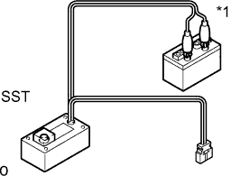
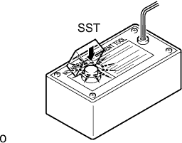
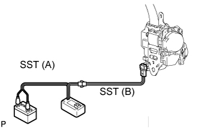
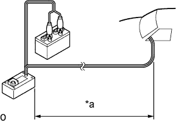
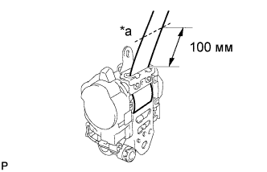
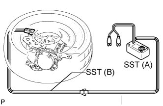
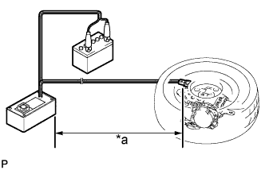
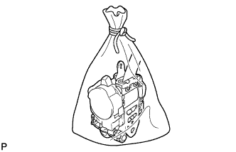

ПЕРЕДНИЙ РЕМЕНЬ С КАТУШКОЙ И ПРЕДНАТЯЖИТЕЛЕМ В СБОРЕ (для 5-дверной модели) > СНЯТИЕ С ЭКСПЛУАТАЦИИ |
| 1. УТИЛИЗАЦИЯ ПЕРЕДНЕГО РЕМНЯ С КАТУШКОЙ И ПРЕДНАТЯЖИТЕЛЕМ В СБОРЕ (ЕСЛИ ОН УСТАНОВЛЕН В АВТОМОБИЛЕ) |
Убедитесь, что SST исправен.
|  |
Подсоедините красный зажим SST к положительному (+) выводу аккумуляторной батареи, а черный – к отрицательному (-) выводу.
| *1 | Аккумуляторная батарея |
|  |
Нажмите на выключатель SST и удостоверьтесь, что загорелся светодиод выключателя SST.
Отсоедините SST от аккумуляторной батареи.
Отсоедините разъем преднатяжителя.
Подготовьте SST для приведения в действие преднатяжителя ремня безопасности.
Установите напольное крепление ремня безопасности.
|  |
Подсоедините SST (A) к SST (B). Затем подсоедините разъем SST (B) к преднатяжителю ремня безопасности.
|  |
Переместите SST на расстояние не менее 10 м (32,8 фута) от передней части автомобиля.
| *a | 10 м или более |
Закройте все окна и двери автомобиля.
Подсоедините красный зажим SST к положительному (+) выводу аккумуляторной батареи, а черный – к отрицательному (-) выводу.
Приведите в действие преднатяжитель ремня безопасности.
Убедитесь, что внутри автомобиля и в радиусе 10 м (32,8 фута) от него никого нет.
Приведите в действие преднатяжитель ремня безопасности, нажав на выключатель SST.
Утилизируйте передний ремень с катушкой и преднатяжителем в сборе (с преднатяжителем ремня безопасности).
| 2. УТИЛИЗАЦИЯ ПЕРЕДНЕГО РЕМНЯ С КАТУШКОЙ И ПРЕДНАТЯЖИТЕЛЕМ В СБОРЕ (ЕСЛИ ОН СНЯТ С АВТОМОБИЛЯ) |
|  |
Снимите передний ремень с катушкой и преднатяжителем в сборе.
Смотайте ремень безопасности с помощью устройства вытяжения.
После достаточного сматывания ремня безопасности обрежьте его на расстоянии примерно 100 мм (0,393 дюйма) от устройства натяжения, как показано на рисунке.
| *a | Отрезать здесь |
Убедитесь, что SST исправен.
| *1 | Аккумуляторная батарея |
Подготовьте SST для приведения в действие преднатяжителя ремня безопасности.
Подсоедините SST (A) к SST (B). Затем подсоедините разъем SST (B) к преднатяжителю ремня безопасности.
|  |
Положите передний ремень с катушкой и преднатяжителем в сборе на землю и накройте его колесом с шиной.
|  |
Отодвиньте SST на расстояние не менее 10 м (32,8 фута) от колеса.
| *a | 10 м или более |
Приведите в действие преднатяжитель ремня безопасности.
Подсоедините красный зажим SST к положительному (+) выводу аккумуляторной батареи, а черный – к отрицательному (-) выводу.
Убедитесь, что в радиусе 10 м (32,8 фута) вокруг колеса никого нет.
Приведите в действие преднатяжитель ремня безопасности, нажав на выключатель SST.
Утилизируйте передний ремень с катушкой и преднатяжителем в сборе (с преднатяжителем ремня безопасности).
Снимите шину (с колесом) и отсоедините SST.
|  |
Уложите передний ремень с катушкой и преднатяжителем в сборе в пластиковый пакет, плотно завяжите его и утилизируйте так же, как и другие обычные детали.